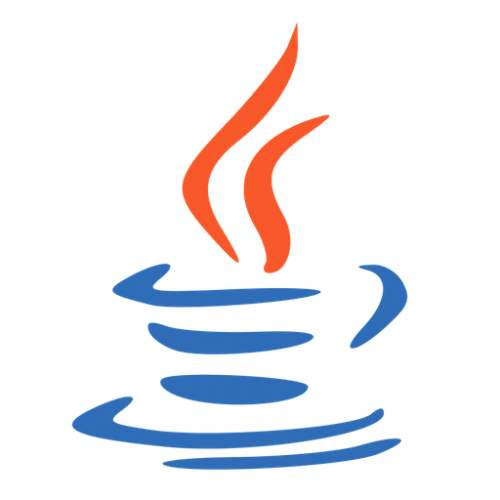
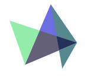

Java 全栈知识体系
导航
导读
Java
Java 面向对象和基础
Java 面向对象基础
Java 基础知识体系
Java进阶 - 集合框架
Java 集合框架详解
Java进阶 - 并发框架
Java 并发知识体系
Java 并发理论基础
Java 并发线程基础
J.U.C 知识体系与详解
Java进阶 - IO框架
Java IO/NIO/AIO详解
Java进阶 - 新版本特性
Java 8 特性详解
Java 8 以上版本特性
Java进阶 - JVM相关
Java 类加载机制
JVM 内存结构详解
JVM 垃圾回收机制
Java 调试排错相关
算法
算法基础和思想
数据结构基础
常见排序算法
算法思想
一些领域算法
安全算法
字符串匹配算法
分布式系统算法
海量数据处理
负载均衡算法
推荐算法
数据挖掘算法
ID生成算法
其它算法相关
头脑风暴
数据库
数据库基础和原理
数据库原理
SQL语言
SQL 数据库
MySQL 详解
NoSQL 数据库
Redis 详解
MongoDB 详解
ElasticSearch 详解
开发
开发 - 常用开发基础
常用类库详解
正则表达式详解
CRON表达式详解
网络协议和工具详解
安全相关详解
开发 - 质量保障
单元测试详解
统一风格详解
质量管理详解
开发 - 代码重构
代码重构相关
Spring
Spring Framework(v5.3)
Spring框架组成
控制反转(IOC)
向切面编程(AOP)
SpringMVC
SpringBoot系列(v2.5)
SpringBoot入门
SpringBoot接口设计和实现
SpringBoot集成MySQL
SpringBoot集成Redis
SpringBoot集成Postgre
SpringBoot集成ElasticSearch
SpringBoot集成Socket
SpringBoot定时任务
SpringBoot后端视图
SpringBoot监控
SpringBoot进阶
框架
架构
工具|部署
开发工具
Git详解
Linux
Docker
项目
方法论
开发原则(SOLID)
分布式理论(CAP)
分布式理论(BASE)
事务理论(ACID)
微服务理论(康威定律)
开发流程详解
开源协议详解
代码规范详解
设计模式详解
产品|团队
关于
¶
开发百宝箱
New
¶
常用搜索
百度
百度——全球最大的中文搜索引擎及最大的中文网站，全球领先的人工智能公司。
Google
全球最大的搜索引擎公司
Bing
微软公司推出的用以取代Live Search的搜索引擎
Magi
Magi 是由 Peak Labs 研发的基于机器学习的信息抽取和检索系统，它能将任何领域的自然语言文本中的知识提取成结构化的数据，通过终身学习持续聚合和纠错，进而为人类用户和其他人工智能提供可解析、可检索、可溯源的知识体系。

搜代码
不知道某个类如何使用? 来这里搜索Java 代码吧...
¶
代码托管
Github
GitHub是一个面向开源及私有软件项目的托管平台
Gitee
开源中国旗下的代码托管平台：码云
Coding
一站式 DevOps，提升研发效能
Bitbucket
Bitbucket is more than just Git code management.
¶
技术社区
CDSN
中国专业IT社区CSDN
博客园
开发者的网上家园
OSChina
中国最大的开源技术社区
知否
中国领先的开发者技术社区
掘金
掘金是一个帮助开发者成长的社区，是一个面向互联网技术人的内容分享平台
51CTO
中国领先的IT技术网站
Linux公社
Linux系统门户网站
IBM 开发者
IBM开发者社区
StackOverflow
Stack Overflow是一个与程序相关的IT技术问答网站
¶
工具合集
菜鸟工具
菜鸟教程提供的工具集
工具
开源中国在线工具
Tool工具箱
程序员的工具箱
脚本之家
脚本之家旗下的工具箱
W3Cschool
W3Cschool旗下的工具箱
Gitee开源
Gitee 开源项目推荐列表
云转换
在线转化压缩包、字体、图片、视频、电子书
¶
基础教程
菜鸟教程
菜鸟教程集合
W3Cschool
w3cschool主要为初学者技术的人员提供在线学习教程和日常技术资料查询服务
W3School
W3School 是因特网上最大的 WEB 开发者资源，其中包括全面的教程、完善的参考手册以及庞大的代码库
MDN
源于开发者，服务开发者
JavaPoint
The Best Portal to Learn Technologies
¶
文档工具
Gitbook
一个先进可定制的文档格式工具
Docsify
一个神奇的文档网站生成工具
VuePress
Vue 驱动的静态网站生成器, 本项目就是使用VuePress开发的
¶
后端开发
Spring
Spring框架是一个开放源代码的J2EE应用程序框架
MyBatis
MyBatis 是一款优秀的持久层框架，它支持定制化 SQL、存储过程以及高级映射。
MyBatis Plus
MyBatis 的增强工具，在 MyBatis 的基础上只做增强不做改变，为简化开发、提高效率而生。
Maven Repo
Maven 仓库检索, 非常常用
Gradle
基于Apache Ant和Apache Maven概念的项目自动化构建开源工具。
¶
前端开发
BootStrap
简洁、直观、强悍的前端开发框架，让web开发更迅速、简单
NPM
NodeJS 包管理文档
Vue
渐进式JavaScript 框架
React
用于构建用户界面的 JavaScript 库
AngularJS
AngularJS是一款优秀的前端JS框架
AntDesignPro
开箱即用的中台前端/设计解决方案
Element-UI
Element，一套为开发者、设计师和产品经理准备的基于 Vue 2.0 的桌面端组件库
View UI
View UI 是一套基于 Vue.js 的高质量UI 组件库
Electron
Electron 是一个赋力前端进行跨平台开发的框架,让开发人员使用 JavaScript, HTML 和 CSS 等前端技术构建跨平台的桌面应用
can i use
前端常用网站了,查看不同属性和方法的兼容性
¶
动态图表
Echarts
百度开发的可定制的数据可视化图表, 已经捐给Apache
AntV
蚂蚁金服全新一代数据可视化解决方案，致力于提供一套简单方便、专业可靠、无限可能的数据可视化最佳实践
D3
用动态图形显示数据的JavaScript库
ThreeJs
运行在浏览器中的3D 引擎

HighCharts
兼容 IE6+、支持移动端、图表类型丰富的HTML5交互性图表库
ChartJs
基于 HTML5 的 JavaScript 图表库
FlotCharts
基于jQuery的Charts，Grafana就是用的它
¶
图片图标
Font-awesome
完美的图标字体库
Squoosh
谷歌出品在线免费图片压缩工具 神器
智图
腾讯出品 在线图片压缩 支持转成 webP 处理静态图片时候很好用
Picdiet
Picdiet是一款在线批量压缩图片神器，它不需要后端服务器或者API的支持，仅通过你的浏览器来压缩图片大小，这意味着它压缩图片极快并且不会导致隐私或敏感图片泄漏。
Bgremover
在线图片去底工具
Photopea
网页版本 Photoshop，非常强大
Iconfont
阿里妈妈MUX倾力打造的矢量图标管理、交流平台。设计师将图标上传到Iconfont平台，用户可以自定义下载多种格式的icon，平台也可将图标转换为字体，便于前端工程师自由调整与调用。
Css Icon
所有的 icon 都是纯 css 画的 缺点：icon 不够多
¶
CSS样式
SAAS
Sass 是成熟、稳定、强大的 CSS 扩展语言。
Stylus
富于表现力、动态的、健壮的 CSS
Less
给 CSS 加点料
zeplin
前端和设计师神器，有标注、Style Guide、版本管理、简单的团队协作，重点是前端不用写css 了，复制就可以了。
CSS triangle
帮你快速用 css 做出三角形
CSS Arrow
帮你做对话框三角的
CSS Effects
图片CSS样式控制
clippy
在线帮你使用 css clip-path 做出各种形状的图形
¶
其它资源
zeplin
前端和设计师神器，有标注、Style Guide、版本管理、简单的团队协作，重点是前端不用写css 了，复制就可以了。
astexplorer
一个在线 ast 生成器
30 seconds of code
收集了许多有用的代码小片段
jex
正则可视化网站，配合上面的 Regular Expressions，写正则方便很多
jsfiddle
在线运行代码网站 很不错，可惜要翻墙
codepan
在线运行代码网站 不用翻墙，可以自己部署
fiddle.md
一个方便的在线共享 markdown 在线笔试题一般都用这个
jsdelivr
cdn 服务
unpkg
常用的 cdn 服务
coderpad
远程面试的神器，可以让面试者远程写代码 不过需要翻墙
icode
有赞团队出品的 coderpad 可以互补，它不需要翻墙
codeadvice
又一个让面试者远程写代码的网址
snipper
一个代码协同的网站。你新建一个代码片段，然后把网址分享给其他人，就可以看到他们的实时编辑。
codesandbox
一个可以在线编辑且提供在线 demo 的网站 支持 vue react angular 多种框架 神器
codrops
上面的交互都非常酷炫
bestofjs
查看一个项目增长经历，Star 数变化的网站，辅助你判断这个库的质量
其它资源正在整理中...
¶
友链交换
Java全栈
Java 全栈知识体系
汪明鑫个人博客
汪明鑫的个人博客
Java架构师必看
Java架构师必看致力于分享优质文章教程【java程序员从初级到中级进阶高级架构师黑马】;搜集全网高质量学习书籍面试题视频项目;让您系统提升java架构技术,免培训工资翻倍。
¶
推荐资源
联系我
添加@pdai微信
PS：添加时请备注
Java全栈
，谢谢！